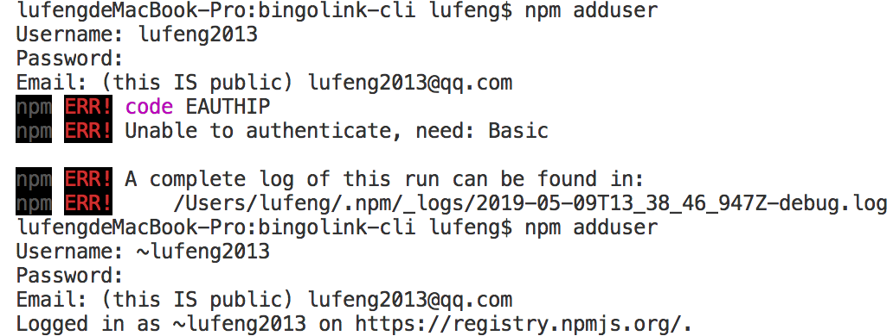

原文连接:https://www.cnblogs.com/lovesong/p/10847433.html
背景
在工作过程中，我们常常会从一个项目工程复制代码到一个新的项目，改项目配置信息、删除不必要的代码。
这样做的效率比较低，也挺繁琐，更不易于分享协作。
所以，我们可以制作一个cli工具，用来快速创建一个新项目的脚手架。如vue-cli就是一个非常好用的cli工具。
PS：cli 是一个全局安装的 npm 包。
目标
制作一个cli工具，步骤如下：
1、将我们的工程模板放到Github上。
如果工程模板有很多个，可以新建一个Organizations，统一放置到这里面。我工程模板有很多个，会统一放Organizations下面。
如果工程模板是放在公司gitlab上，则可以新建一个Group来统一管理。
2、定义控制台命令，包含其参数。
参数一般有 -v 显示包版本， -h 显示帮助信息，create 作为创建项目的命令参数。
如vue-cli的创新项目命令是 vue create [name]。
3、创建一个npm包工程，实现以上command功能。
如今Github已有很多cli工具，可以clone一个作为参考模板。
PS：我做的cli工具将在最下面放出链接。
问题
刚开始要做cli工具时，我头脑里就有几个问题。
1、怎么快速获取到输入的命令行参数？
我相信已有好的npm包可以完成这功能，我不想自己再从头做一遍。
2、怎么做选项选择功能、文字输入？
由于我的工程模板会有很多个，就想做个选项功能，创建工程时可以选择其中一个模板。
3、怎么优雅地输出日志？
console.log虽然可以用，但样式不好看，需要区分info、error日志。
方法
1、怎么快速获取到输入的命令行参数？
yargs模块能够解决如何处理命令行参数。
2、怎么做选项选择功能、文字输入？
inquirer模块能够处理命令行交互。
3、怎么优雅地输出日志？
chalk模块解决字符串样式问题。
具体实现步骤
1、获取模板列表
2、设置模板选项
3、获取模板的tag列表
4、设置tag选项
5、设置项目信息输入
6、下载zip_ball，并复制到目标位置
7、修改项目的信息
具体实现代码


1 #!/usr/bin/env node
2
3 var yargs = require("yargs");
4 var info = require("./info.js");
5
6 var args = yargs
7 .command({
8 command: "create <name>",
9 desc: "Create a bingolink template.",
10 builder: {},
11 handler: function(argv) {
12 var projectName = argv.name;
13 //1.获取模板列表
14 info.getTemplates(function(templates){
15 //2.设置选项
16 info.showTemplateList(templates, (templateName) => {
17 var t = templates.find((template) => {
18 return template.name == templateName;
19 });
20 //3.获取标签列表
21 info.getTags(t.tagsUrl, (tags) => {
22 //4.设置选项
23 info.showTagList(tags, (tagName) => {
24 var tag = tags.find((tag) => {
25 return tag.name == tagName;
26 });
27 //5.项目信息输入
28 info.showProjectInputView(projectName, (project) => {
29 projectName = project.project_name;
30 //6.下载zip_ball，并复制到目标位置
31 info.downloadZipball(tag.zipUrl, projectName, () => {
32 //7.修改项目的信息
33 info.editProjectInfo(project);
34 })
35 })
36 })
37 })
38 })
39 })
40 }
41 })
42 .version() // Use package.json's version
43 .help()
44 .alias({
45 "h": "help",
46 "v": "version"
47 })
48 .strict(true)
49 .demandCommand()
50 .argv;上面是入口js的代码，虽然有回调地狱，但还算比较清晰。
其他代码就不贴上，可以clone我的工程下来看。
工程地址：https://github.com/codingforme/bingolink-cli
发布npm包
1、npm adduser
在发布npm包前，需要先登录npm。
2、npm publish
在工程的根目录，执行这命令即可。
附录
1、npm adduser可能会出现如下的错误。

出现第一错误时，有人说要在Username前加个~号。
我加了，也确实显示登录成功了，但还是怎么都发布不上，一直显示User Not Found。
所以我重新注册了一个npmjs帐号，然后npm logout，再npm adduser新帐号，才发布成功！！！
本文为原创文章，转载请保留原出处，方便溯源，如有错误地方，谢谢指正。